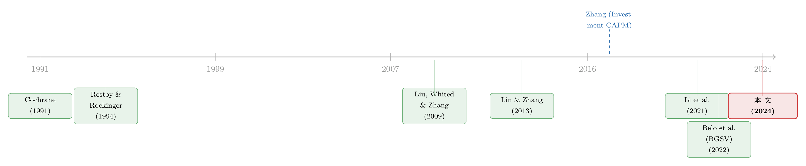

一个「成功」的模型，为什么经不起逐年对账？——重估投资基础资产定价
本文读的是 Belo, Deng & Salomao (2024, JFE)：新古典投资基础模型（investment-based asset pricing model）有一个很强的预测——一家公司的股票收益率在每一个时点都应等于它的（带杠杆）投资收益率；可过去二十年的结构估计文献，几乎只检验了它「平均成立」这一弱版本，并大获成功。作者把「逐年成立」的强预测写进 GMM 的矩条件，结果发现：那个把横截面拟合到 XS-R² = 71% 的标准模型，在时间序列上的 TS-R² 是 −93%；更糟的是，横截面拟合与时间序列拟合之间存在一个此消彼长的权衡，鱼与熊掌不可兼得。
1 一个看上去很「成功」的模型
先讲一个让很多人安心了二十年的故事。
新古典投资基础模型的核心思想，朴素得近乎优雅：一家公司值多少钱、它的股票该有多高的预期收益，归根结底取决于它手上的实物资本能再榨出多少利润，以及再多投一块钱要付出多大代价。Cochrane (1991) 把这条思路点亮，Liu, Whited & Zhang (2009)（下称 LWZ）则把它推到了实证的高峰：他们用一个只有一种（实物）资本投入、技术为一阶齐次（homogeneous of degree one）的标准模型，去匹配若干组合排序的平均收益，结果好得出奇——投资率高的公司、产出比高的公司，模型几乎能把它们平均收益的横截面差异解释个八九不离十。
于是，「投资基础模型能解释股票收益的横截面」几乎成了一条共识。这条共识背后是一个看似无关紧要、实则要命的细节：LWZ 检验的，是模型的「弱」版本。
模型真正说的是什么？它说，在每一个时点 t，一家公司实现的股票收益率都应当等于它由特征（投资率、产出、杠杆）算出来的投资收益率——这是一条逐期成立的等式。而 LWZ 以及后来的绝大多数结构工作，检验的只是「这两者在样本期内平均相等」。
打个比方：模型承诺「我每个月的账都对得上」，而过去的检验只核对了「这一年下来收支总账是平的」。总账平，不代表每个月都没记错。
这就引出了本文真正想问的那个问题。
2 研究问题：把「逐年对账」写进检验
如果我们要求模型不仅平均对得上，还要在每个时点都尽量对得上，它还站得住吗？
这正是 Belo, Deng & Salomao 的切入点。他们的做法，说穿了非常自然：在用广义矩估计（generalized method of moments, GMM）估计模型时，除了沿用前人那套「平均相等」的横截面矩（cross-sectional moments），再添上一组全新的时间序列矩（time-series moments）——直接度量「逐期对账」的偏差。
为什么这是一个更高的栏？因为时间序列矩盯住的是模型在每个时点的拟合，而不只是把误差在时间上抹平后的那个均值。一个模型可以靠正负误差相互抵消、把平均误差做得很漂亮；可一旦你逐期去看，那些被抵消掉的误差就无所遁形了。
要把这一步讲清楚，得先把模型本身摊开来看。
3 模型：从「再投一块钱」到「股票收益等于投资收益」
这是一篇有完整理论模型的论文，下面一步步把它的骨架搭出来。沿用 LWZ 的记号。
第一块积木：生产与资本。 公司 i 在 t 期的经营利润为 \(\Pi(K_{it}, X_{it})\)，其中 \(K_{it}\) 是实物资本，\(X_{it}\) 是外生的总量与公司层面冲击。技术为规模报酬不变（constant returns to scale），即 \(\Pi(K_{it},X_{it}) = K_{it}\,\partial\Pi(K_{it},X_{it})/\partial K_{it}\)，且生产函数为 Cobb–Douglas，资本的边际产出为
$$ \frac{\partial \Pi(K_{it},X_{it})}{\partial K_{it}} = \alpha \frac{Y_{it}}{K_{it}}, $$
其中 \(0<\alpha\le 1\) 是资本在产出中的份额，\(Y_{it}\) 是销售。资本以一个公司特定、随时间变化的折旧率 \(\delta_{it}\) 衰减，并靠投资 \(I_{it}\) 累积：
$$ K_{it+1} = I_{it} + (1-\delta_{it})K_{it}. \tag{1} $$
第二块积木：调整成本。 投资不是免费的搬运——投得越猛越贵。调整成本取标准的二次型，在 \(I_{it}\) 上递增且凸、在 \(I_{it}\) 与 \(K_{it}\) 上规模报酬不变：
$$ \Phi(I_{it}, K_{it}) = \frac{c}{2}\left(\frac{I_{it}}{K_{it}}\right)^2 K_{it}, \tag{2} $$
其中 \(c>0\) 是调整成本的斜率参数。注意：整个模型最终要估计的参数，只有两个——\(\theta \equiv (\alpha, c)\)，一个管「赚钱能力」，一个管「投资有多贵」。
第三块积木：估值与最优化。 公司用一期债务融资，在随机贴现因子 \(M_{t+1}\) 下，选择投资与债务以最大化股权的含息市值：
$$ V_{it} \equiv \max_{\{I_{it+s},\,K_{it+s+1},\,B_{it+s+1}\}_{s=0}^{\infty}} \; \mathbb{E}_t \sum_{s=0}^{\infty} M_{t+s}\, D_{it+s}, \tag{4} $$
其中 \(D_{it}\) 是当期派现。对 (4) 关于资本投资求一阶条件，得到投资基础模型的核心——投资欧拉方程 \(\mathbb{E}_t[M_{t+1}\,r^{I}_{it+1}] = 1\)，其中投资收益率 \(r^{I}_{it+1}\) 是 t+1 期投资边际收益与 t 期投资边际成本之比：
$$ r^{I}_{it+1} \equiv \frac{(1-\tau_{t+1})\!\left[\alpha\frac{Y_{it+1}}{K_{it+1}} + \frac{c}{2}\!\left(\frac{I_{it+1}}{K_{it+1}}\right)^{2}\right] + \tau_{t+1}\delta_{it+1} + (1-\delta_{it+1})\!\left[1+(1-\tau_{t+1})c\frac{I_{it+1}}{K_{it+1}}\right]}{1+(1-\tau_t)\,c\frac{I_{it}}{K_{it}}}. \tag{5} $$
直觉上：分母是「今天多投一块钱的边际代价」（一块钱本金，外加调整成本的边际增量）；分子是「明天这一块钱带来的好处」（多出的边际产出、折旧税盾，再加上没折旧掉的那部分资本连同它省下的调整成本）。两者一比，就是这笔投资的「收益率」。
关键的一跃。 对债务求一阶条件，可得 \(\mathbb{E}_t[M_{t+1}\,r^{Ba}_{it+1}]=1\)，其中 \(r^{Ba}\) 是税后公司债收益率。在 Hayashi (1982) 的规模报酬不变条件下，投资收益率恰好等于股票收益率与税后债务收益率按市场杠杆 \(w_{it}\) 的加权平均：
把它解出来，就得到本文反复盯着的那条等式——股票收益率等于带杠杆的投资收益率：
$$ r^{S}_{it+1} = r^{Iw}_{it+1} \equiv \frac{r^{I}_{it+1} - w_{it}\,r^{Ba}_{it+1}}{1-w_{it}}. \tag{7} $$
请注意 (7) 式右边：它没有任何误差项。模型不是说「股票收益率平均等于投资收益率」，而是说它们在每一个时点都精确相等。这正是「强预测」的全部分量所在——也是过去的检验绕开了的地方。
4 识别策略：把强预测翻译成一个矩
有了 (7) 式，剩下的就是计量上怎么「逼问」模型了。
首先，沿用前人的弱版本。横截面矩要求股票收益率平均等于带杠杆投资收益率：
$$ g^{XS}_i = \mathbb{E}_T\!\left[r^{S}_{it+1} - r^{Iw}_{it+1}\right] = 0. \tag{8} $$
接着，一个自然的问题是：怎样把「逐期相等」也写成一个可估计的矩？作者的答案干净利落——用非线性最小二乘的思路，把每个组合逐期偏差的平方在时间上取均值作为目标：
$$ g^{TS}_i = \mathbb{E}_T\!\left(r^{S}_{it+1} - r^{Iw}_{it+1}\right)^2 = 0. \tag{9} $$
(8) 与 (9) 的差别，正是「总账」与「月月对账」的差别：(8) 先在时间上求和再看是否为零，正负可以抵消；(9) 先平方再求和，任何一期的失配都会留下痕迹。作者把每个组合的矩堆成向量 \(g^{XS}\)、\(g^{TS}\)，再合成 \(g \equiv [g^{XS}; g^{TS}]\)，用一步 GMM 最小化加权组合：
$$ \min_{\theta}\; g_T'\, W\, g_T. \tag{10} $$
然后，真正巧妙的一步在于那个权重矩阵 \(W\)。 作者并不固定它，而是让它在「只看横截面」和「只看时间序列」之间连续滑动：\(W=[I,0]\) 是 Only XS（等价于 LWZ 的原始估计），\(W=[0,I]\) 是 Only TS，\(W=[I,Z]\) 则是两者兼顾、\(Z\) 越大越偏向时间序列。沿用 LWZ，他们在十个账面市值比（book-to-market）组合上估计，共 20 个矩：10 个横截面 + 10 个时间序列。
衡量拟合好坏的两把尺子也很直白：横截面看平均股票收益对平均投资收益散点图的 XS-R²；时间序列则看一条「逐期股票收益对逐期投资收益」线性投影的 TS-R²：
$$ TS\text{-}R^2 = 1 - \frac{\sum_{i=1}^{N}\sum_{t=1}^{T}\left(r^{S}_{it+1} - r^{Iw}_{it+1}\right)^2}{\sum_{i=1}^{N}\sum_{t=1}^{T}\left(r^{S}_{it+1} - \overline{r^{S}}\right)^2}. \tag{12} $$
\(R^2\) 可以为负，这一点下面会变得至关重要——它意味着模型的逐期预测，比「干脆用样本均值去猜」还要差。
5 主要结果：成功的横截面，与崩塌的时间序列
于是，反转出现了。
第一， 当只用横截面矩（Only XS，即 LWZ 的做法）时，一切如旧的美好：横截面定价误差极低（约每年 1.4%），XS-R² = 71%。可一旦回头逐期对账，TS-R² = −93%。换句话说，那个被奉为「成功解释了横截面」的模型，在时间序列上连样本均值都不如。横截面拟合得越漂亮，越掩盖了它逐期的全面失灵。
第二——也是全文最锋利的发现——是一个此消彼长的权衡。 作者把权重 \(Z\) 一点点往时间序列那边调，于是：
- 随着时间序列权重上升，模型的时序拟合确实在改善；
- 但与此同时，横截面拟合急剧恶化：
XS-R²从只用横截面矩时的71%，一路跌到只用时间序列矩时的 −134%。
鱼与熊掌，这个标准模型一个都抓不住。
第三，最反直觉的一击： 即便把估计完全押在时间序列上（Only TS，专门为最大化时序拟合而设计），模型的 TS-R² 仍然只有 −4%。也就是说，哪怕你拼尽全力让它去拟合逐期收益，它依然拟合不了。这把「也许只是估计没对准方向」这条退路也堵死了。
这呼应了 LWZ 自己当年记下、却未深究的一个「相关性之谜」：模型隐含的股票收益与投资收益相关性低得可怜。本文证明，这个谜在估计被设计成最大化时序拟合时依然顽固存在，不是调参能消解的。
6 排除两个嫌疑人
一个负责任的实证工作者，此刻会立刻反问：会不会是数据或方法的毛病，而非模型本身的问题？作者老老实实地审了两个最大的嫌疑人。
嫌疑人一：组合加权偏差（aggregation bias）。 如 Belo et al. (2022)（BGSV）与 Gonçalves et al. (2020)（GXZ）所指出，LWZ 在组合层面构造投资收益的方式存在加权偏差。作者先用校准模型的模拟数据确认：只要把组合层面的投资收益正确加权，理论上 TS-R² 应当近乎完美，而 LWZ 的有偏加权确实会把它压得很低——看起来嫌疑很大。可是，当他们改用无偏的组合加权在真实数据上重新估计后，时序拟合依然惨不忍睹：TS-R² = −17%，即便只用时间序列矩去最大化时序拟合也是如此。嫌疑人一，排除。
嫌疑人二：价量错配（data misalignment）。 一个合理的担心是：股价（及股票收益）会对总量冲击瞬时反应，而投资要花时间才调得动，于是投资收益滞后于股票收益（Lamont 2000 对此有更正式的分析）。如果这种错配是短命的，那么把数据「抹平」——用（年化的）5 年复合收益——理应缓解失配。理论上，模拟数据确实显示长周期下 TS-R² 会明显提高；可真实数据里，用 5 年复合的股票与投资收益算出来的 TS-R² 仍是 −11%。嫌疑人二，也排除。
两个最自然的「数据背锅」假说都站不住，剩下的结论便冷峻而清晰：问题出在模型本身。
7 推广：错的不是「等式」，是「缺了变量」
到这里，一个谨慎的读者会担心：你这套检验是不是太依赖 (7) 式那个「股票收益恰等于投资收益」的强假设了？万一这个等式本身不成立的模型，反而没问题呢？
作者于是把方法推广到一大类投资收益—股票收益等式未必成立的模型：只需在模拟数据里跑「股票收益对公司特征」的简单时序与横截面回归，估出这条联系的强度，再拿去和真实数据里同样的回归比。他们把它用在两个一种（实物）资本投入、但不满足 (7) 式的模型上——Lin & Zhang (2013) 的递减规模报酬、非凸非对称调整成本加固定经营成本模型，以及 Kogan & Papanikolaou (2013) 的无调整成本、带投资专属冲击模型。
结果是一记漂亮的对照：在模拟数据里，这些模型同样隐含股票收益与公司特征（资本边际产出、公司规模、当期与滞后的投资率）之间强烈的线性关系——横截面 XS-R² > 96%、时间序列 TS-R² > 84%。可一旦搬到真实数据，同一组特征对实现股票收益的解释力骤降到 TS-R² 约 5%。这说明：模型里驱动股票收益的那组公司特征，和真实世界里驱动股票收益的特征，根本不是同一组——有重要的公司特征，被这些只含一种实物资本的模型漏掉了。
这是一个建设性的结论：失败不在「投资基础」这条大思路，而在「只用一种实物资本」这个过于单薄的设定。出路或许在多投入（如无形资本）模型——这一点下面文献脉络里会再提。
8 文献脉络
把这条线索捋一捋，故事其实很连贯。
起点是 Cochrane (1991) 的生产基础资产定价，与 Restoy & Rockinger (1994)——他们点明，股票收益与「投资收益」之间存在深刻联系。真正把它做成实证主力的是 Liu, Whited & Zhang (2009)：用一种实物资本、一阶齐次技术的标准模型，把横截面平均收益拟合得令人信服，奠定了「投资基础模型有效」的范式；他们也顺手记下了那个被搁置的相关性之谜。Zhang (2017) 后来把这条思路总结为「投资 CAPM」。

接着，对 LWZ 的反思从两个方向涌来。一支盯方法：Belo et al. (2022)（BGSV）要求模型匹配估值比的时间序列，Gonçalves et al. (2020)（GXZ）则点破了 LWZ 组合加权的偏差。另一支盯设定：Lin & Zhang (2013) 放松一阶齐次、引入递减规模报酬与更丰富的调整成本；Kogan & Papanikolaou (2013) 干脆抛开调整成本、改用投资专属冲击；Li et al. (2021) 用两种资本投入、贝叶斯方法、甚至允许技术参数随行业与时间变化，显著改善了对异象组合收益的解释。还有一支盯联检：Delikouras & Dittmar (2021) 把横截面矩与投资欧拉方程一起检验，同样发现基准模型难以兼顾两组矩——但他们需要设定随机贴现因子，因而背上了联合假设的包袱。
本文所处的位置因此格外清晰：它既不另起炉灶设定贴现因子（从而避开联合假设难题），也不止步于「平均相等」，而是把逐期相等这条最强的时序预测，直接焊进 GMM 的矩条件里，第一次系统性地量出了「横截面成功」与「时间序列崩塌」之间的那道裂缝。关于「贴现率才是资产定价中心议题」的大背景，可参见《贴现率：资产定价的中心议题》；而这类「把结构模型严肃地拿去和数据对账」的方法论旨趣，也与《把结构模型「蒸馏」成一张查找表》一脉相承。
评论与延伸（Q&A + 研究方向）
(a) 几个可能的疑问
Q：横截面矩和时间序列矩到底差在哪，为什么前者好拟合、后者那么难？
差在「先求和」还是「先平方」。横截面矩 (8) 是先把逐期偏差在时间上求平均再看是否为零，正负误差可以相互抵消，因此一个时序上漂浮不定、但均值碰巧对得上的模型也能过关；时间序列矩 (9) 先把每期偏差平方再求和，任何一期的失配都会被记账。论文明确指出，方差类矩之所以仍不够，是因为它忽略了股票收益与投资收益之间的时序相关性——而
TS-R²恰恰盯住了这个相关性。
Q：R² 怎么会是 −93% 甚至 −134%？这是不是算错了？
没算错。(12) 式的
TS-R²是相对于「用样本均值去预测」的基准定义的，分子是模型残差平方和、分母是对均值的离差平方和。当模型逐期预测比「干脆猜均值」还差时，分子大于分母，R²就为负。−93% 的直白含义是：模型隐含的投资收益作为股票收益的逐期预测，比一条水平的均值线还要糟。
Q：会不会只是十个 BM 组合太少、test assets 选得不好？
作者沿用 LWZ 在十个账面市值比组合上估计，主要是为了压低估计噪声、并与既有文献可比；论文也提到在附录里考虑了其他 test assets。更关键的是，结论的稳健性不是靠组合数量撑起来的，而是靠两个「嫌疑人」被逐一排除（无偏加权后仍为 −17%、5 年复合后仍为 −11%）以及推广检验里真实数据
TS-R²仅约 5% 这几个独立证据共同支撑的。
Q：既然只用时间序列矩估计也只有 −4%，那是不是说模型「调不动」？
正是这个意思，而且这才是最致命的。如果只用横截面矩时时序拟合差、改用时序矩后大幅改善，那还能说是「之前没对准目标」。但 Only TS 把全部火力都压在时序上，
TS-R²仍然只有 −4%——说明在这个只有 \((\alpha,c)\) 两个参数、一种实物资本的设定里，根本不存在一组参数能同时让逐期股票收益对得上。问题是结构性的，不是估计策略的。
Q：这是不是等于宣判投资基础模型「死刑」？
不是。作者的推广检验给出了建设性的诊断：失败的不是「股票收益由实物投资决定」这条大思路，而是「只用一种实物资本」这个过窄的设定——模型里驱动收益的特征（资本边际产出、规模、投资率）和真实数据里驱动收益的特征对不上，说明漏了重要变量（如无形资本、多种投入）。这是给后续研究指路，而非关门。
Q：和 Delikouras & Dittmar (2021) 同样发现「两组矩难兼顾」，本文新在哪？
两点。其一，DD 需要设定随机贴现因子来写投资欧拉方程，因而检验的是「技术 + 贴现因子」的联合假设；本文（至少在基准模型的估计中）不设定贴现因子，把检验收窄到公司技术本身，从而能干净地把「设定哪里出了问题」归到技术上。其二，本文提出的是逐期对账的时间序列矩这一具体、可操作、易解读的工具，并量出了横截面—时序之间明确的权衡曲线。
(b) 几个可能的研究问题与提案
1. 把无形资本投入加进来，能否同时救活横截面与时间序列？
【经济故事】本文诊断「缺了重要变量」，而 Peters & Taylor (2017) 已证明无形资本对投资—q 关系至关重要、Li et al. (2021) 也靠两种资本投入改善了异象拟合。一个自然的猜想是：把无形资本作为第二种投入后，逐期股票收益的失配会大幅收窄。 【可行性】高。数据上可用 Peters & Taylor 的无形资本存量度量加
Compustat；识别上沿用本文的双矩 GMM 框架，直接对比一种投入与两种投入模型的TS-R²权衡曲线即可，doable。
2. 把这套「逐期对账」检验搬到公司债与信用市场。
【经济故事】(6) 式里 \(r^{Ba}\)（税后公司债收益率）本就是投资收益的一条腿，却几乎没人检验过模型对债券收益时间序列的逐期预测。信用利差与投资、杠杆的逐期联系，可能比股票那条腿更紧或更松，本身就是有信息量的诊断。 【可行性】中。需要
TRACE的公司债成交价构造逐期债券收益，并把组合按信用评级/久期排序；识别上把 (9) 式的目标从股票收益换成债券收益。挑战在债券收益的测量噪声更大，但正因如此，时序矩的诊断价值也更高。
3. 外资持有人结构是否就是那个「漏掉的变量」？
【经济故事】本文说真实数据里驱动收益的特征和模型里的对不上。如果一家公司的边际投资者结构（如外资持有比例）系统性地影响其贴现率，那么忽略它的纯技术模型自然会在时序上失配。把持有人结构作为附加特征放进推广检验的回归，看真实数据
TS-R²能否从 5% 抬升，会很有意思。 【可行性】中。数据上可用13F与外资持有数据库；识别上嵌入本文第 7 节的「模拟—真实数据回归对照」框架。难点是持有人结构与公司特征内生，需要额外的工具或事件冲击来佐证。
4. 横截面—时间序列权衡曲线，能否当作模型「体检」的标准刻度？
【经济故事】本文最优美的产物，是那条随权重 \(Z\) 移动、
XS-R²与TS-R²此消彼长的权衡曲线。它其实是一张刻画「模型张力」的诊断图——曲线越靠右上、越平坦，模型越接近真实。可以把它制度化，作为评判任意投资基础模型的统一标尺。 【可行性】高。无需新数据，只需把现有的多类模型（LWZ、Lin-Zhang、Kogan-Papanikolaou、两资本模型）放进同一 GMM 框架，画出各自的权衡前沿来横向比较，纯方法论工作，doable。
我的判断
贡献。 这篇论文最大的价值，不在于又拒绝了一个模型，而在于它改变了「检验投资基础模型」这件事的标准。过去二十年，文献默契地停在「平均相等」这个弱版本上享受成功，本文用一个极简、可解读、不依赖随机贴现因子设定的时间序列矩，把模型真正承诺的「逐期相等」拎到台前，并量出了一条清晰的横截面—时序权衡曲线。XS-R²=71% 与 TS-R²=−93% 的强烈反差、以及 Only TS 下仍仅 −4% 的顽固失配，是那种一旦看见就再也无法忽视的事实。更可贵的是它的诚实：把加权偏差与价量错配两个最自然的「数据背锅」假说亲手排除，才敢把矛头指向模型设定。
对识别的担忧。 我有两点保留。其一，所有结论都建在十个 BM 组合上，组合层面的聚合虽降低了噪声，却也可能抹掉了真正能让模型在时序上发力的公司层面异质性——尽管作者用无偏加权回应了一部分，我仍想看到在更多、更细的 test assets（尤其是动量、盈利等其他异象排序）上的权衡曲线。其二，时间序列矩用的是 NLLS 残差平方，作者自己也坦言测量误差会让这个矩在零附近随机偏离，从而影响卡方检验的解读；本文重经济解读、轻统计检验是务实的，但这也意味着「−93% vs −4%」这类数字的统计显著性还需要更正式的处理。
后续想看到什么。 我最想看到的是把这套逐期对账框架推向两种或多种资本投入（尤其是无形资本）的模型——本文已经把病灶定位在「缺变量」，下一步自然是验证补上变量能否同时救活横截面与时间序列，并在那条权衡曲线上看到肉眼可见的改善。其次，我很期待有人把它搬到公司债与信用市场：(6) 式里的债券腿一直被冷落，而那恰恰可能是检验「技术 vs 贴现率」分工的最佳战场。
参考文献
- Belo, F., Gala, V. D., Salomao, J., Vitorino, M. A. (2022). Decomposing firm value. Journal of Financial Economics 143(2), 619–639.
- Cochrane, J. H. (1991). Production-based asset pricing and the link between stock returns and economic fluctuations. Journal of Finance 46(1), 209–237.
- Cochrane, J. H. (2009). Asset Pricing: Revised Edition. Princeton University Press.
- Delikouras, S., Dittmar, R. (2021). Estimating and testing investment-based asset pricing models. (Working paper / as cited in Belo, Deng & Salomao 2024.)
- Hayashi, F. (1982). Tobin's marginal q and average q: A neoclassical interpretation. (As cited for the homogeneity conditions.)
- Kogan, L., Papanikolaou, D. (2014). Growth opportunities, technology shocks, and asset prices. Journal of Finance 69(2), 675–718.
- Lamont, O. A. (2000). Investment plans and stock returns. Journal of Finance 55(6), 2719–2745.
- Li, E. X., Ma, G., Wang, S., Yu, C. (2021). Fundamental anomalies. SSRN Working Paper 3783526.
- Lin, X., Zhang, L. (2013). The investment manifesto. Journal of Monetary Economics 60(3), 351–366.
- Liu, L. X., Whited, T. M., Zhang, L. (2009). Investment-based expected stock returns. Journal of Political Economy 117(6), 1105–1139.
- Peters, R. H., Taylor, L. A. (2017). Intangible capital and the investment-q relation. Journal of Financial Economics 123(2), 251–272.
- Restoy, F., Rockinger, G. M. (1994). On stock market returns and returns on investment. Journal of Finance 49(2), 543–556.
- Zhang, L. (2017). The investment CAPM. European Financial Management 23(4), 545–603.